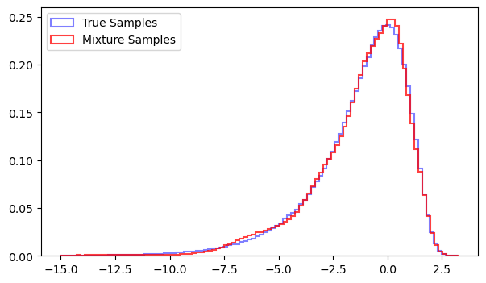
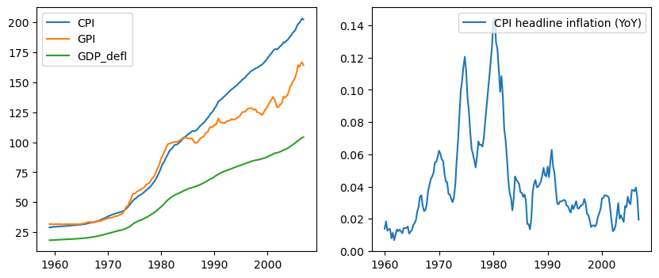
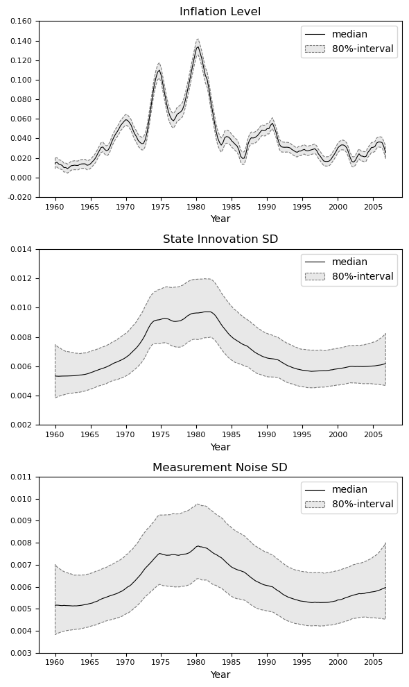

The Unobserved Component Stochastic Volatility Model#
Theory#
Model Purpose and Overview#
Stock and Watson (2007) propose an unobserved components model with stochastic volatility (UCSV) for inflation. The model expresses inflation \pi_t as the sum of a time‐varying trend plus a transitory component, each with time‐varying variance. Specifically:
Here, h_t is the volatility of the short‐run fluctuations and w_t is the volatility of the trend innovations; both h_t and w_t evolve over time according to their own stochastic processes.
Key Findings by Stock and Watson
-
Changing Inflation Volatility: They show that both the permanent and transitory shocks to inflation exhibit significant variance changes, reflecting important shifts in the volatility of inflation over different historical periods.
-
Improved Model Fit: Allowing time‐varying variance for both the trend and transitory shocks helps explain episodes of high and low inflation volatility. This leads to a better empirical fit compared to simpler models with constant volatility.
-
Implications for Forecasting: Time variation in shock variances affects the predictability of inflation. In some periods, the trend may be more stable (lower variance), while in others the transitory component may drive larger short‐term swings. These shifts in relative volatility can make inflation more or less forecastable at different times.
Overall, the UCSV approach highlights how inflation can be viewed through the lens of trend + noise, each evolving with its own stochastic volatility, thus capturing both structural shifts and periods of stability in inflation dynamics.
Stochastic Processes for the Variances
In the Stock and Watson (2007) setup, the two error variances h_t and w_t evolve stochastically over time. Their approach is to assume each variance follows a random walk in log scale, ensuring positivity:
Under this specification, the level of each variance changes gradually, capturing shifts in the volatility of both the permanent shocks \eta_t (with variance h_t) and the transitory shocks \varepsilon_t (with variance w_t).
The Unobserved Component Stochastic Volatility Model#
Theory#
Model Purpose and Overview#
Stock and Watson (2007) propose an unobserved components model with stochastic volatility (UCSV) for inflation. The model expresses inflation \pi_t as the sum of a time‐varying trend plus a transitory component, each with time‐varying variance. Specifically:
Here, h_t is the volatility of the short‐run fluctuations and w_t is the volatility of the trend innovations; both h_t and w_t evolve over time according to their own stochastic processes.
Key Findings by Stock and Watson
-
Changing Inflation Volatility: They show that both the permanent and transitory shocks to inflation exhibit significant variance changes, reflecting important shifts in the volatility of inflation over different historical periods.
-
Improved Model Fit: Allowing time‐varying variance for both the trend and transitory shocks helps explain episodes of high and low inflation volatility. This leads to a better empirical fit compared to simpler models with constant volatility.
-
Implications for Forecasting: Time variation in shock variances affects the predictability of inflation. In some periods, the trend may be more stable (lower variance), while in others the transitory component may drive larger short‐term swings. These shifts in relative volatility can make inflation more or less forecastable at different times.
Overall, the UCSV approach highlights how inflation can be viewed through the lens of trend + noise, each evolving with its own stochastic volatility, thus capturing both structural shifts and periods of stability in inflation dynamics.
Stochastic Processes for the Variances
In the Stock and Watson (2007) setup, the two error variances h_t and w_t evolve stochastically over time. Their approach is to assume each variance follows a random walk in log scale, ensuring positivity:
Under this specification, the level of each variance changes gradually, capturing shifts in the volatility of both the permanent shocks \eta_t (with variance h_t) and the transitory shocks \varepsilon_t (with variance w_t).
Stock and Watson’s Approach to Updating h_t and w_t#
In the original Stock and Watson (2007) implementation, the variances of the log-vol processes are typically fixed or calibrated rather than fully estimated via a Bayesian updating. This means they set \gamma_eta^2 and \gamma_\epsilon^2 to fixed values, often chosen based on a small training sample or other prior considerations.
Under this scheme, the unknown paths \{\sigma_{\eta, t}^2\} and \{\sigma_{\epsilon, t}^2\} are each updated using a separate state-space routine (akin to a Kalman filter/smoother), but the “measurement error” involved in these auxiliary models is non-normal. Hence, for the UC-SV model, one effectively solves three state-space models when setting up the Gibbs sampler:
-
Main Model: Handle this using the standard Carter and Kohn (1994) method of resampling from normal state space models, conditioning on the current values of \{\sigma_{\eta, t}^2\} and \{\sigma_{\epsilon, t}^2\} in the Gibbs sampler sweep. $$ \pi_t = \tau_t + \epsilon_t, \quad \epsilon_t \sim N\bigl(0,\,\sigma_{\epsilon, t}^2 \bigr),\ \quad \tau_t = \tau_{t-1} + \eta_t, \quad \eta_t \sim N\bigl(0,\,\sigma_{\eta, t}^2 \bigr). $$
-
Volatility of Transitory Shocks: Next, subtract \tau_t from the measurement equation and square it. The RHS is now \eta_t^2 \sim \sigma_{\eta, t}^2 N(0, 1)^2 distributed. Taking logs, we arrive at \ln \sigma_{\eta, t}^2 + \ln \chi^2 on the RHS. Let u_{\eta, t} \sim_{iid} \ln \chi^2, we have the following state-space model: $$ \begin{align} y^\star_t := \ln((\pi_t - \tau_t)^2) &= \ln \sigma_{\eta,t}^2 + u_{\eta, t} \ \ln \sigma_{\eta, t}^2 &= \ln \sigma_{\eta, t-1}^2 + \nu_{\eta, t} \end{align} $$ Because the measurement error is not normally distributed, we cannot use the Kalman Filter directly on this state-space model. If we could, we would be able to apply the Carter & Kohn (1994) method to sample from linear state space models (see previous notebook for an introduction to Carter and Kohn). However, there we use a trick by Shephard and Kim (1998). The distribution of u_{\eta, t} can be well approximated by a mixture distribution of normals: $$ u_{\eta, t} \sim \sum_{1\leq i\leq 7} \phi_i N(m_i, \varsigma_i) $$ where the \phi_i are indicators which randomly select a normal variate N(m_i, \varsigma_i). Each \phi_i is 1 with probability \omega_i, and the constraint \sum_i \phi_i = 1 applies. The vectors \omega, m and \varsigma are fixed and chosen such that \phi_i N(m_i, \varsigma_i) approximates the \ln \chi^2 distribution well. The insight here is that conditionally on \phi, the noise u_{\eta, t}| \phi is normally distributed. Therefore, in a Gibbs sampling routine, we can first draw \phi | \text{others} \sim \phi | y^\star, and in a second step apply the Carter and Kohn sampling scheme. The draw of \phi_t | \text{others} \sim \phi | y^\star_t is easily achieved, with (f_N is a normal density)
- Volatility of Permanent Shocks: The idea for the process of the other volatility is the same. We write the model in state-space form with non-normal measurement error. Then we approximate the measurement error with a normal mixture, making the state space conditionally normal. To the conditionally normal state space model, we apply a forward pass of the Kalman filter and a backward pass of the Kalman smoother combined, during which we draw samples (CK method). The state space is: $$ \begin{align} y^\star_t := \ln((\tau_t - \tau_{t-1})^2) &= \ln \sigma_{\epsilon,t}^2 + u_{\epsilon, t} \ \ln \sigma_{\epsilon, t}^2 &= \ln \sigma_{\epsilon, t-1}^2 + \nu_{\epsilon, t} \end{align} $$ By constructing a similar state-space as for \ln(\eta_t^2), Stock and Watson again use a mixture approximation for the log-chi-squared distribution to sample \ln h_t.
Consequently, while each volatility path is updated in a “Kalman-like” fashion, the non-Gaussian nature of \ln(\varepsilon_t^2) and \ln(\eta_t^2) means additional mixture-indicator steps are required, but the innovation variances \sigma_h^2 and \sigma_w^2 for those log-vol processes remain fixed throughout the estimation.
Implementation#
Normal Mixture Approximation#
We begin the coding part of this notebook by confirming that the normal mixture approximates the distribution of \ln \chi^2 well. Let’s make this an exercise. The mixture weights and parameters are:
Task [Mixture Approximation of \log \chi^2]: Write a function, which will generate draws of the mixture indicators given a weights vector (here, such vector is \omega). Second, write a function to draw from the mixture component specified by the indicator given as input. Third, compare the samples from the mixture distribution to samples of a \log \chi^2 variable. Plot the sampling distributions and make sure they are close.
import numpy as np
from numba import njit
import matplotlib.pyplot as plt
from tqdm import trange
import pandas as pd
# we need a function to draw the indicators for a mixture of normals
def draw_from_mixture(components):
"""
Draws samples from the normal distributions corresponding to the specified mixture components.
Parameters:
components (array-like): Array of mixture component indices (1 to 7).
Returns:
np.ndarray: An array of samples drawn from the corresponding normal distributions.
"""
# Updated mixture component parameters (mi, sigma_c^2 from Table 4)
mixture_parameters = np.array([
(-10.12999, 5.79596), # Component 1
(-3.97281, 2.61369), # Component 2
(-8.56686, 5.17950), # Component 3
(2.77786, 0.16735), # Component 4
(0.61942, 0.64009), # Component 5
(1.79518, 0.34023), # Component 6
(-1.08819, 1.26261) # Component 7
])
# Ensure components are valid
if not np.all((1 <= components) & (components <= len(mixture_parameters))):
raise ValueError("All component indices must be between 1 and 7.")
# Get the parameters for the specified components
mu_c = mixture_parameters[components - 1, 0] # Means
sigma2_c = mixture_parameters[components - 1, 1] # Variances
sigma_c = np.sqrt(sigma2_c) # Standard deviations
# Draw samples from the corresponding normal distributions
return np.random.normal(mu_c, sigma_c) - 1.2704
# I write this function rather than using using pre-built functions
# to ensure that the function is compatible with numba
@njit
def discrete_sample(p):
"""
Returns one index sampled according to probability vector p.
p should sum to 1.
"""
u = np.random.rand()
cdf = 0.0
for i in range(len(p)):
cdf += p[i]
if u < cdf:
return i
return len(p) - 1 # Fallback in case of floating-point rounding
def draw_mixture_index(size=1):
"""
Draws a sample of mixture indexes.
Parameters:
size (int): Number of samples to draw.
Returns:
np.ndarray: An array of samples from the mixture index.
"""
# Mixture probabilities (pi from Table 4)
mixture_probabilities = np.array([0.00730, 0.10556, 0.00002, 0.04395, 0.34001, 0.24566, 0.25750])
# Draw samples from the mixture index
return np.array([discrete_sample(mixture_probabilities) + 1 for _ in range(size)])
# Example usage
n = 1_000_000
c = draw_mixture_index(size=n) # Draw a component index
mixture_samples = draw_from_mixture(c) # Draw from the corresponding normal distribution
true_samples = np.log(np.abs(np.random.normal(0, 1, n)))*2
# Plot the true and mixture samples
plt.figure(figsize=(7, 4))
plt.hist(true_samples[true_samples > -15], bins=100, alpha=0.5, label="True Samples", color='blue', density=True, histtype='step', linewidth=1.5)
plt.hist(mixture_samples[mixture_samples > -15], bins=100, alpha=0.75, label="Mixture Samples", color='red', density=True, histtype='step', linewidth=1.5)
plt.legend()
plt.show()
plt.close()

The Data#
The data we will be working with can be found on Dimitris Korobilis’ website, where you can also find his full replication of the UC-SV model with some extra bells and whistles. I suggest popping by if you want to learn some more of the advanced Bayesian stuff.
For now, place the files infl_data.dat and yearlabb.dat somewhere where you can access them.
# import data from /data/stock_watson_infl/infl_data.dat
data = np.loadtxt('./data/stock_watson_inflation/infl_data.dat')
years_data = np.loadtxt('./data/stock_watson_inflation/yearlab.dat', usecols=0)
colnames = ['CPI', 'GPI', 'GDP_defl']
data_col = 0
# make stuff inflation rates (annualized)
years = years_data[4:]
y = (data[4:,data_col] - data[:-4,data_col])/data[:-4,data_col] # inflation time series
# years = np.arange(2007 - len(y)/4, 2007, 1/4)
# y = y[years >= 1953]
# years = years[years >= 1953]
# plt.plot(years, y)
# plot the data
fig, axs = plt.subplots(1, 2, figsize=(10, 4))
axs[0].plot(years_data, data, label=colnames)
axs[1].plot(years, y, label='CPI headline inflation (YoY)')
axs[0].legend()
axs[1].legend()
plt.show()
plt.close()

The Model#
Next step is to write down a proper Gibbs sampler for the UC-SV model. And of course, that is easier said than done. We accomplish it in a sequence of steps, described in the following pseudo code.
INPUT:
{π_t}_{t=1..T}, observed inflation data
hyperparameters {γ_η^2, γ_ε^2}, or initial guesses if these are fixed
number of MCMC iterations (N + burn_in)
INITIALIZE:
1. For t=1..T:
• Set μ_t^(0) = some initial guess (e.g., 0 or an OLS-based trend)
• Set ln(σ_{η,t}^2)^(0) = constant (e.g., log of small value)
• Set ln(σ_{ε,t}^2)^(0) = constant
2. Possibly initialize mixture indicators if using log-chi^2 approximation
FOR iteration i = 1 TO (N + burn_in):
(A) Sample the entire path {μ_t} given {σ_{η,t}^2, σ_{ε,t}^2}:
1. Use a forward‐filter / backward‐sample routine (Carter‐Kohn style):
- State equation: μ_t = μ_{t-1} + η_t, Var(η_t)=σ_{η,t}^2
- Measurement: π_t = μ_t + ε_t, Var(ε_t)=σ_{ε,t}^2
- Because σ_{η,t}^2, σ_{ε,t}^2 are known in this step (from prev iteration),
treat them as time‐varying “Q_t” and “R_t” in the Kalman filter.
2. The result is a new draw: {μ_t}^(i).
(B) Sample log‐vol {ln(σ_{ε,t}^2)} using the residuals u_t:
1. Compute u_t = π_t - μ_t, for t=1..T.
2. Let y_t = ln(u_t^2 + offset).
3. Similarly to step (B):
- Draw mixture indicators for y_t given current ln(σ_{ε,t}^2).
- Treat ln(σ_{ε,t}^2) as a random walk:
ln(σ_{ε,t}^2) = ln(σ_{ε,t-1}^2) + ν_{ε,t}, Var(ν_{ε,t})=γ_ε^2.
- Forward‐filter/backward‐sample to obtain {ln(σ_{ε,t}^2)}^(i).
4. Convert back to {σ_{ε,t}^2}^(i).
(C) Sample log‐vol {ln(σ_{η,t}^2)} using the increments of μ_t:
1. Compute η_t = μ_t - μ_{t-1}, for t=2..T.
2. Let v_t = ln(η_t^2 + offset), to avoid ln(0).
3. Use a mixture‐of‐normals approximation or a log(χ^2) approach:
- For each t=2..T, draw a mixture indicator based on v_t and current ln(σ_{η,t}^2).
- Construct a state‐space for ln(σ_{η,t}^2), which evolves as:
ln(σ_{η,t}^2) = ln(σ_{η,t-1}^2) + ν_{η,t}, Var(ν_{η,t})=γ_η^2.
- Apply a forward‐filter/backward‐sample step with "observations" = v_t - (mixture means).
4. The output is a new path {ln(σ_{η,t}^2)}^(i), thus {σ_{η,t}^2}^(i).
(D) [OPTIONAL] If γ_η^2 or γ_ε^2 are to be updated (we don't do this here):
- gather the sum of squared increments in ln(σ_{η,t}^2) or ln(σ_{ε,t}^2).
- draw from an appropriate Inverse‐Gamma posterior or similar.
Otherwise, if γ_η^2, γ_ε^2 are fixed, skip this.
(E) If i > burn_in:
Store {μ_t}^(i), {σ_{η,t}^2}^(i), {σ_{ε,t}^2}^(i)
END FOR
OUTPUT:
Posterior draws for the trend {μ_t},
the permanent shock volatility {σ_{η,t}^2},
and the transitory shock volatility {σ_{ε,t}^2}.
We begin by defining functions for drawing the mixture indexes conditional on the data and the current sweep of the Gibbs sampler.
@njit
def random_choice_nb(p):
"""
Returns 'size' samples (as an array of indices) from the distributions in p.
rows of p should sum to 1.
"""
size = p.shape[0]
out = np.empty(size, dtype=np.int64)
for s in range(size):
out[s] = discrete_sample(p[s])
return out
@njit
def draw_mixture_index_cond(obss, lvls):
# preallocate
mixture_weights = np.zeros((len(obss), 7))
mixture_qs = np.array([0.00730, 0.10556, 0.00002, 0.04395, 0.34001, 0.24566, 0.25750])
mixture_parameters = np.array([
(-10.12999, 5.79596), # Component 1
(-3.97281, 2.61369), # Component 2
(-8.56686, 5.17950), # Component 3
(2.77786, 0.16735), # Component 4
(0.61942, 0.64009), # Component 5
(1.79518, 0.34023), # Component 6
(-1.08819, 1.26261) # Component 7
])
for i, (obs, lvl) in enumerate(zip(obss, lvls)):
# Compute the mixture weights based on the updated parameters
mixture_weights[i] = mixture_qs * np.exp(-0.5 * (obs - mixture_parameters[:, 0] + 1.2704 - lvl)**2 / mixture_parameters[:, 1]) / mixture_parameters[:, 1]**0.5
mixture_weights[i] /= np.sum(mixture_weights[i])
# Draw `size` indices based on the weights
indices = random_choice_nb(mixture_weights)
# Return indices in 1-based format (components are 1 through 7)
return indices + 1, mixture_weights
_, _ = draw_mixture_index_cond(np.array([0., 0.2]), np.array([0., 0.1]))
_ = random_choice_nb(np.array([0.00730, 0.10556, 0.00002, 0.04395, 0.34001, 0.24566, 0.25750])[np.newaxis, :])
# check that the functions runs fast
%time _ = random_choice_nb(np.array([0.00730, 0.10556, 0.00002, 0.04395, 0.34001, 0.24566, 0.25750])[np.newaxis, :])
%time _,_ = draw_mixture_index_cond(np.array([0., 0.2]), np.array([0., 0.1]))
CPU times: user 5 μs, sys: 0 ns, total: 5 μs
Wall time: 6.91 μs
CPU times: user 19 μs, sys: 0 ns, total: 19 μs
Wall time: 19.8 μs
With working functions to draw from the mixture distribution, we turn to the Carter-Kohn sampler. The function sample_univ_lss specifically implements Carter and Kohn for a linear state space with time varying variances and univariate observation and state equations. It often makes sense to rewrite your state-space model from scratch from a computational perspective. While matrix algebra can express the Kalman filter and resampling procedure neatly, writing functions which deal with general linear state space models often run orders of magnitudes slower. This is due to lower compatibility with numba and frequently encountered matrix inverses, which hugely simplify if we are dealing with scalars or with diagonal matrices.
@njit
def sample_univ_lss(
y,
a=None,
F=None,
Q=None,
c=None,
H=None,
R=None,
x0_mean=0.0,
x0_var=1.0
):
"""
Samples the latent states {x_t} from a univariate, time-varying linear
Gaussian state-space model:
State equation: x_{t+1} = a[t+1] + F[t+1]*x_t + ε_{t+1}, Var(ε_{t+1}) = Q[t+1]
Measurement equation: y_t = c[t] + H[t]*x_t + ω_t, Var(ω_t) = R[t]
Indexing convention:
- t ranges from 0 to T-1.
- y[t] is observed at time t.
- x0_mean, x0_var are the prior mean and variance for x_0.
- Arrays (a, F, Q, c, H, R) each have length T (univariate).
- By default, a[t] = 0, c[t] = 0, F[t] = 1, H[t] = 1 (if passed as None).
- Q and R must be explicitly specified (no default).
Methodology follows Carter and Kohn (1994). See also Primiceri (2004).
Parameters
----------
y : np.ndarray of shape (T,)
Observations y[0..T-1].
a : np.ndarray of shape (T,), optional
Time-varying intercept for x_{t+1}. If None, a[t]=0 for all t.
F : np.ndarray of shape (T,), optional
Time-varying coefficient for x_{t+1} = a[t+1] + F[t+1]*x_t + ...
If None, F[t]=1 for all t.
Q : np.ndarray of shape (T,)
Time-varying variance of the state noise for x_{t+1}.
c : np.ndarray of shape (T,), optional
Time-varying intercept in y_t = c[t] + H[t]*x_t + ...
If None, c[t]=0 for all t.
H : np.ndarray of shape (T,), optional
Time-varying coefficient in y_t = c[t] + H[t]*x_t + ...
If None, H[t]=1 for all t.
R : np.ndarray of shape (T,)
Time-varying variance of the measurement noise.
x0_mean : float, optional
Prior mean for x_0. Default is 0.0.
x0_var : float, optional
Prior variance for x_0. Default is 10.0.
Returns
-------
x_draw : np.ndarray of shape (T,)
A single draw for the latent states x_0, ..., x_{T-1}.
"""
T = len(y)
# Provide defaults if any are None
if a is None:
a = np.zeros(T)
if F is None:
F = np.ones(T)
if c is None:
c = np.zeros(T)
if H is None:
H = np.ones(T)
if Q is None:
Q = np.ones(T)
if R is None:
R = np.ones(T)
# Filtered means and variances
alpha_filt = np.zeros(T)
P_filt = np.zeros(T)
# -------------------------------
# Forward filter
# -------------------------------
# Initialization from prior for x_0
alpha_pred = x0_mean
P_pred = x0_var
for t in range(T):
# Measurement update: y[t] = c[t] + H[t]*x[t] + noise, Var(noise)=R[t]
yhat = c[t] + H[t]*alpha_pred
res = y[t] - yhat
S_t = H[t]**2 * P_pred + R[t]
K_t = (P_pred * H[t]) / S_t
alpha_filt[t] = alpha_pred + K_t*res
P_filt[t] = (1 - K_t*H[t]) * P_pred
# Time update for x_{t+1}, if t < T-1
if t < T-1:
alpha_pred = a[t+1] + F[t+1]*alpha_filt[t]
P_pred = (F[t+1]**2)*P_filt[t] + Q[t+1]
# -------------------------------
# Backward sampler
# -------------------------------
x_draw = np.zeros(T)
# Sample x_{T-1} from N(alpha_filt[T-1], P_filt[T-1])
x_draw[T-1] = np.random.normal(alpha_filt[T-1], np.sqrt(P_filt[T-1]))
# For t = T-2 down to 0, sample x_t | x_{t+1}, data
for t in range(T-2, -1, -1):
F_val = F[t+1]
A_val = a[t+1]
denom = F_val**2 * P_filt[t] + Q[t+1]
if denom < 1e-14:
post_mean = alpha_filt[t]
post_var = P_filt[t]
else:
x_tplus1_pred = A_val + F_val*alpha_filt[t]
K_smooth = (P_filt[t]*F_val) / denom
post_mean = alpha_filt[t] + K_smooth*(x_draw[t+1] - x_tplus1_pred)
post_var = P_filt[t] - K_smooth*(F_val*P_filt[t])
x_draw[t] = np.random.normal(post_mean, np.sqrt(post_var))
return x_draw
s2_eta = np.ones_like(y)
s2_eps = np.ones_like(y)
sample_univ_lss(y,
Q = s2_eps,
R = s2_eta)
%time _ = sample_univ_lss(y, Q = s2_eps, R = s2_eta)
CPU times: user 130 μs, sys: 0 ns, total: 130 μs
Wall time: 133 μs
We are now ready to complete the Gibbs sampler. The following implementation runs efficiently. Frquent use of numba and tailor made code allow us to draw 10,000 samples in under 3 seconds.
## sampling parameters
n_draws = 20_000
burn_in = 5_000
## mixture parameters
mixture_parameters = np.array([
(-10.12999, 5.79596), # Component 1
(-3.97281, 2.61369), # Component 2
(-8.56686, 5.17950), # Component 3
(2.77786, 0.16735), # Component 4
(0.61942, 0.64009), # Component 5
(1.79518, 0.34023), # Component 6
(-1.08819, 1.26261) # Component 7
])
## variables that change in each sweep
s2_eta = np.ones(len(y)) # process innovation variances
log_s2_eta = np.log(s2_eta)
s2_eps = np.ones(len(y)) # measurement noise variances
log_s2_eps = np.log(s2_eps)
## SS subsystems for process innovation/measurement noise
s2_v_eta = .02 # variance of state innovation in sub-SS-model (proc innovation)
s2_v_eps = .02 # variance of observation noise in sub-SS-model (meas noise)
c = 1E-5 # stabilizing constant for log transformation
## preallocate
T = len(y)
s2_eta_samples = np.zeros((n_draws, T))
s2_eps_samples = np.zeros((n_draws, T))
alpha_samples = np.zeros((n_draws, T))
for i in trange(-burn_in, n_draws, desc="Sampling", leave=True):
### ALPHA
# Estimate the inflation trend and noise component using KF
# and sample the latent states using CK sampler
alpha = sample_univ_lss(y, Q = s2_eta, R = s2_eps)
### ETA
## sample mixture components for measurement innov variance
y_star = np.log((y - alpha)**2+c) # dep var in transformed state space submodel
sample_indices, _ = draw_mixture_index_cond(y_star, log_s2_eta) # draw mixture indices
params = mixture_parameters[sample_indices-1] - np.array([1.2704, 0.]) # obtain the mixture parameters
## sample levels of observation noise variances
log_s2_eta = sample_univ_lss(y_star,
Q=np.repeat(s2_v_eta, T) , # state equation var
R=params[:,1], # measurement equation var
c=params[:,0], # measurement equation mean
x0_var = 1E9,
x0_mean = 1E-4
)
s2_eta = np.exp(log_s2_eta)
### EPSILON
## sample mixture components for process noise variance
y_star = np.log((alpha[1:] - alpha[:-1])**2+c)
sample_indices, _ = draw_mixture_index_cond(y_star, log_s2_eps)
params = mixture_parameters[sample_indices-1] - np.array([1.2704, 0.])
## sample states log(s2_eps_t) for t = 2, ..., T
log_s2_eps = sample_univ_lss(y_star,
Q=np.repeat(s2_v_eps, T-1) , # state equation var
R=params[:,1], # measurement equation var
c=params[:,0], # measurement equation mean
x0_var = 1E9,
x0_mean = 1E-4
)
log_s2_eps_0 = log_s2_eps[0] - np.random.normal(scale=np.sqrt(s2_v_eps)) # sample s2_eps_0
log_s2_eps = np.concatenate(([log_s2_eps_0], log_s2_eps)) # concatenate with s2_eps_0
s2_eps = np.exp(log_s2_eps)
if i >= 0:
s2_eta_samples[i] = s2_eta
s2_eps_samples[i] = s2_eps
alpha_samples[i] = alpha
Sampling: 100%|██████████| 25000/25000 [00:04<00:00, 5091.21it/s]
Visual Analysis#
Without going in too much detail, we can plot the
def plot_ts_quantiles(ax, years, dat, quantiles, title, x_select=None):
if x_select is not None:
data = dat.copy()[:, x_select]
x = years[x_select]
else:
data = dat.copy()
x = years.copy()
from matplotlib.ticker import FormatStrFormatter
quantiles = pd.DataFrame(data).quantile(quantiles, axis=0).T.to_numpy()
ax.plot(x, quantiles[:, 1], label='median', color='black', lw=.8)
ax.fill_between(x, quantiles[:, 0], quantiles[:, 2], alpha=0.5, label='80%-interval', color='lightgrey', ec="black", linewidth=.8, linestyle='--')
ax.set_xticks(x[::20])
ax.set_xticklabels(x[::20], fontsize=8)
ax.set_xlabel('Year', fontsize=10)
ax.set_yticks(ax.get_yticks())
ax.set_yticklabels(ax.get_yticks(), fontsize=8)
ax.yaxis.set_major_formatter(FormatStrFormatter('%.3f')) # round to 2 decimals
ax.xaxis.set_major_formatter(FormatStrFormatter('%.0f')) # round to 0 decimals
ax.legend()
ax.set_title(title)
return None
fig, axs = plt.subplots(nrows=3, ncols=1, figsize=(6, 10), sharex=False)
plot_ts_quantiles(axs[0], years, alpha_samples, [0.1, 0.5, 0.9], 'Inflation Level', x_select=(years > 1954))
plot_ts_quantiles(axs[1], years, np.sqrt(s2_eps_samples), [0.1, 0.5, 0.9], 'State Innovation SD', x_select=(years > 1954))
plot_ts_quantiles(axs[2], years, np.sqrt(s2_eta_samples), [0.1, 0.5, 0.9], 'Measurement Noise SD', x_select=(years > 1954))
axs[1].set_xlabel('Year', fontsize=10)
fig.tight_layout()
